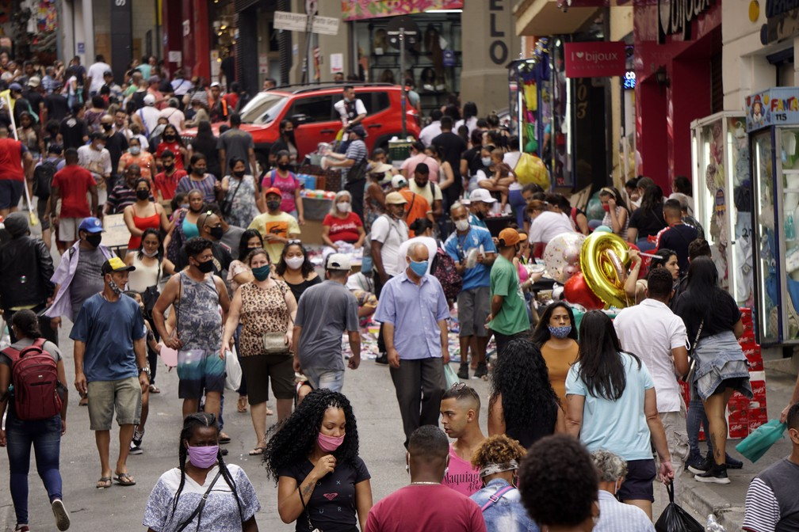
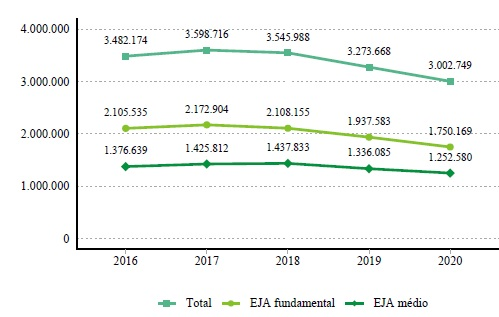

O Brasil se tornou o novo centro da pandemia do coronavírus somando mais de dezoito milhões de pessoas diagnosticadas com COVID-19. O grande número de casos da doença e vidas interrompidas dividem espaço com os resultados negativos da economia brasileira e as tensões no cenário político. Com essa crise, alguns economistas acreditam que o país caminha para a recessão no próximo semestre. A economia brasileira já caminhava a passos lentos rumo à recuperação, mas a pandemia transformou todo otimismo, ampliando as desigualdades e provocando um ambiente de muita insegurança.
A queda do PIB
A queda do Brasil em números. A diminuição de 1,5% do Produto Interno Bruto (PIB) nacional no primeiro trimestre de 2020, segundo o Instituto Brasileiro de Geografia e Estatística (IBGE), reflete os impactos da pandemia do novo coronavírus na economia brasileira. O número representa o menor resultado desde o segundo trimestre de 2015, quando o indicador caiu -2,1%. Os dados do IBGE apontam ainda que o recuo na economia foi motivado pela queda de 1,6% nos serviços – setor que configura 74% do PIB brasileiro –, a indústria encolheu -1,4% e a agropecuária cresceu 0,6%. Já o consumo das famílias, que representa 65% do produto interno bruto, caiu 2% enquanto o do governo teve expansão de 0,2%.

Aumento do desemprego
O número de pessoas desempregadas subiu e chegou a 12,8 milhões (12,6%) no trimestre concluído em abril – 898 mil a mais do que o trimestre anterior, segundo a Pesquisa Nacional por Amostra de Domicílios Contínua (PNAD Contínua) do IBGE. O levantamento aponta que o Brasil bateu recorde com 5 milhões de pessoas que desistiram de procurar emprego. Em março, quando a Organização Mundial da Saúde (OMS) decretou pandemia e o Brasil registrou a primeira morte pela COVID-19, os governos adotaram medidas de isolamento social para tentar conter a propagação do novo coronavírus. Com isso, comércios e serviços não essenciais tiveram que interromper as atividades ou tiveram drástica redução da demanda. A ação teve um resultado devastador no mercado de trabalho brasileiro que, entre março e abril, fechou 1,1 vagas com carteira assinada em decorrência da pandemia do novo coronavírus, apontam dados do Novo Cadastro Geral de Empregados e Desempregados (Caged). Outros 8,1 milhões de trabalhadores tiveram contrato suspenso ou redução de salário e jornada – com respaldo da Medida Provisória 936 –, segundo o Ministério da Economia.

Aumento da desigualdade
O profundo abismo da desigualdade impede que muitas famílias de baixa renda cumpram o isolamento social recomendado pela Organização Mundial da Saúde (OMS). A taxa de isolamento no Estado de São Paulo foi de 47% em 1º de junho – quando o ideal seria 70%, de acordo com o Sistema de Monitoramento Inteligente do governo. Na Capital, o índice foi de 49%. Em maio, o percentual de famílias que se declararam endividadas ficou em 66,5%, segundo Pesquisa de Endividamento e Inadimplência do Consumidor (Peic), divulgada pela Confederação Nacional de Comércio de Bens, Serviços e Turismo (CNC). Enquanto muitos trabalhadores precisam se arriscar para conseguir colocar comida em casa, dados do IBGE apontam que o 1% mais rico da população – formada por 2,1 milhões de pessoas – obteve rendimento médio mensal de R$ 28.659 no ano passado, que equivale a 33,7 vezes a renda da metade da população brasileira mais pobre, que ganhava R$ 850. Com os impactos causados pela crise do novo coronavírus, a disparidade pode aumentar.

Piora na educação
Um estudo elaborado pelo IMD World Competitiveness Center comparou a prosperidade e a competitividade de 64 nações, em uma pesquisa que analisou como está o ambiente econômico e social do país para gerar inovação e se destacar no cenário global. No geral, o Brasil caiu uma posição em relação a 2019, após quatro anos seguidos de avanços – de acordo com a entidade, isso aconteceu por conta da entrada de um país a mais na lista deste ano (a africana Botsuana, em 61ª).No eixo que avalia a educação, o Brasil teve a pior avaliação entre as nações analisadas, alcançando a 64ª posição. Entre outros fatores, o resultado nesse quesito se explica pelo mau desempenho do país no que diz respeito aos gastos público totais em educação. Segundo a pesquisa, quando avaliado em termos per capita, o mundo investe em média US$ 6.873 (cerca de R$ 34,5 mil) por estudante anualmente, enquanto o Brasil aplica apenas US$ 2.110 (R$ 10,6 aproximadamente).Apesar desse resultado, o Brasil não investe pouco em educação, ao menos não no que diz respeito ao Produto Interno Bruto (PIB). Um estudo da Organização para Cooperação e Desenvolvimento Econômico (OCDE) aponta que o país investiu uma média de 5,6% do seu PIB na área de educação, uma porcentagem acima da média de 4,4% das nações da OCDE. No que diz respeito ao investimento em educação no Brasil, um dos problemas está na qualidade e na execução dos gastos. O país teve um baixo desempenho no Pisa, a principal avaliação internacional de desempenho escolar, ocupando a 54ª posição, e no TOEFL, ocupando o 43º lugar no ranking. Além disso, o analfabetismo atinge 6,8% da população acima de 15 anos, sendo a média mundial de apenas 2,6%.
